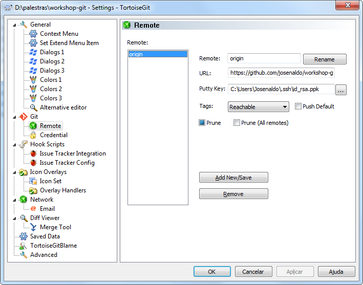
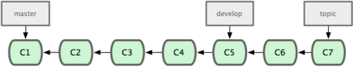
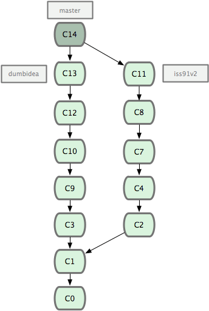

Formação GIT - Uma Dádiva dos ninjas
Quem sou?
Josenaldo de Oliveira Matos Filho
Jugleader no UaiJUG
Arquiteto de Software do comdominiodigital.com.br
Code, Coffee and Rock'n'Roll
Quem somos?

Grupo de usuários Java do Triângulo Mineiro
Tomo 1
Introdução ao Controle de Versão
O dia em que rasguei o CD!

Controle de versão
Um sistema de controle de versão, VCS, na função prática da Ciência da Computação e da Engenharia de Software, é um software com a finalidade de gerenciar diferentes versões no desenvolvimento de um documento qualquer...
Boring definition...
Controle de versão - Vantagens
Controle de histórico
Trabalho em equipe
Marcação e resgate de versões estáveis
Ramificação do projeto
Zipomatic Versioning

Controle de versão local

Controle de versão centralizado

Controle de versão distribuído

Tomo 2
Noções Básicas de Git
Snapshots x diferenças

Snapshots x diferenças

Operações locais
O seu repositório é uma CÓPIA
A maior parte das operações ocorre localmente
Ex: commit, add, revert...
Integridade ninja
Tudo tem checksum
SHA-1
Os estados

Tomo 3
Preparando o git
Instalação
https://git-scm.com/book/pt-br/v1/Primeiros-passos-Instalando-Git
Configuração inicial *nix

Configuração inicial Windows

Identidade
$ git config --global user.name "John Doe"
$ git config --global user.email johndoe@example.com
Editor
$ git config --global core.editor emacs
$ git config --global core.editor "atom --wait"
$ git config --global core.editor "subl -n -w"
$ git config --global core.editor "mate -w"
Ferramenta de diff
$ git config --global merge.tool vimdiff
Ferramenta de diff - Windows

Verificando as configurações
$ git config --list
user.name=Scott Chacon
user.email=schacon@gmail.com
color.status=auto
color.branch=auto
color.interactive=auto
color.diff=auto
...
Verificando uma configuração específica
$ git config user.name
Scott Chacon
Obtendo ajuda
$ git help <verb>
$ git <verb> --help
$ man git-<verb>
Tomo 4
Git essencial
Inicializando um Repositório em um Diretório Existente
$ git init
Qual é a diferença entre “git init” e “git init --bare”?

Clonando um repositório existente
$ git clone https://github.com/josenaldo/workshop-git.git
$ git clone git@github.com:josenaldo/workshop-git.git
clone != checkout
Ciclo de vida do arquivo

Verificando o status de seus arquivos
$ git status
On branch master
Initial commit
Untracked files:
(use "git add <file>..." to include in what will be committed)
README.md
nothing added to commit but untracked files present (use "git add" to track)
Monitorando novos arquivos
$ git add README.md
$ git status
On branch master
Initial commit
Changes to be committed:
(use "git rm --cached <file>..." to unstage)
new file: README.md
E no Windows?
Alterando arquivos adicionados
- Criar e adicionar arquivo index.html
- Alterar arquivo index.html
- Criar arquivo app.js
Alterando arquivos adicionados
$ git status
On branch master
Changes to be committed:
(use "git reset HEAD <file>..." to unstage)
new file: index.html
Changes not staged for commit:
(use "git add <file>..." to update what will be committed)
(use "git checkout -- <file>..." to discard changes in working directory)
modified: index.html
Untracked files:
(use "git add <file>..." to include in what will be committed)
app.js
Atenção!!!
Quando o git add é executado, o git seleciona o arquivo do jeito que ele está.
Se esse arquivo for alterado após o git add, é necessário executar o git add novamente.
Ignorando arquivos
Configurar um arquivo .gitignore antes de começar a trabalhar é uma boa ideia.
Regras
- Linhas em branco ou iniciando com # são ignoradas.
- Padrões glob comuns funcionam. *
- Você pode terminar os padrões com uma barra (/) para especificar diretórios.
- Você pode negar um padrão ao iniciá-lo com um ponto de exclamação (!).
* Definição chata de glob patterns na wikipedia
Verificcando as mudanças
$ git diff
diff --git a/index.html b/index.html
index 2c78d33..544c542 100644
--- a/index.html
+++ b/index.html
@@ -16,11 +16,11 @@
</head>
<body>
-
+ <h1>Olha o titulo adicionado!
+ <h2>Outro só pra variar</h2>
+
<script src="https://ajax.googleapis.com/ajax/libs/jquery/1.11.3/jquery.min.js"></script>
- <!-- Include all compiled plugins (below), or include individual files as needed -->
<script src="https://maxcdn.bootstrapcdn.com/bootstrap/3.3.5/js/bootstrap.min.js"></script>
-
- <script src="https://ajax.googleapis.com/ajax/libs/angularjs//angular.js"></script>
+ <script src="https://ajax.googleapis.com/ajax/libs/angularjs//angular.js"></script>
</body>
</html>
warning: LF will be replaced by CRLF in index.html.
The file will have its original line endings in your working directory.
Comitando
$ git commit -m "Comita com mensagem"
git commit -a -m 'Adiciona e comita com mensagem'
Comitando no TortoiseGit

Outros comandos
Remover arquivos
$ git rm arquivo
$ git rm --cached readme.txt
$ git rm log/\*.log
Movendo arquivos
$ git mv arquivo_origem arquivo_destino
Visualizando o histórico de commits
$ git log
commit ca82a6dff817ec66f44342007202690a93763949
Author: Scott Chacon <schacon@gee-mail.com>
Date: Mon Mar 17 21:52:11 2008 -0700
changed the verison number
commit 085bb3bcb608e1e8451d4b2432f8ecbe6306e7e7
Author: Scott Chacon <schacon@gee-mail.com>
Date: Sat Mar 15 16:40:33 2008 -0700
removed unnecessary test code
...
Parâmetros do git log
| Opção | Descrição |
|---|---|
-p
|
Mostra o patch introduzido com cada commit. |
--stat
|
Mostra estatísticas de arquivos modificados em cada commit. |
--shortstat
|
Mostra somente as linhas modificadas/inseridas/excluídas do comando --stat. |
--name-only
|
Mostra a lista de arquivos modificados depois das informações do commit. |
--name-status
|
Mostra a lista de arquivos afetados com informações sobre adição/modificação/exclusão dos mesmos. |
Parâmetros do git log
| Opção | Descrição |
|---|---|
--abbrev-commit
|
Mostra somente os primeiros caracteres do checksum SHA-1 em vez de todos os 40. |
--relative-date
|
Mostra a data em um formato relativo (por exemplo, “2 semanas atrás”) em vez de usar o formato de data completo. |
--graph
|
Mostra um gráfico ASCII do branch e histórico de merges ao lado da saída de log. |
--pretty
|
Mostra os commits em um formato alternativo. Opções incluem oneline, short, full, fuller, e format (onde você especifica seu próprio formato). |
Histórico no Windows
Desfazendo coisas no git
Cuidado! Essa é uma das poucas áreas no Git onde você pode perder algum trabalho se fizer errado.
Modificando o último commit
$ git commit --amend
$ git commit -m 'initial commit'
$ git add forgotten_file
$ git commit --amend
Tirando arquivos da área de seleção
Você adicionou arquivos (git add) e quer remover algum deles?
$ git add .
$ git status
# On branch master
# Changes to be committed:
# (use "git reset HEAD <file>..." to unstage)
#
# modified: README.txt
# modified: benchmarks.rb
Git reset neles!
$ git reset HEAD benchmarks.rb
benchmarks.rb: locally modified
$ git status
# On branch master
# Changes to be committed:
# (use "git reset HEAD <file>..." to unstage)
#
# modified: README.txt
#
# Changes not staged for commit:
# (use "git add <file>..." to update what will be committed)
# (use "git checkout -- <file>..." to discard changes in working directory)
#
# modified: benchmarks.rb
#
Desfazendo um Arquivo Modificado
Alterou um arquivo e quer desfazer a alteração?
# Changes not staged for commit:
# (use "git add <file>..." to update what will be committed)
# (use "git checkout -- <file>..." to discard changes in working directory)
#
# modified: benchmarks.rb
#
Use checkout!
$ git checkout -- benchmarks.rb
$ git status
# On branch master
# Changes to be committed:
# (use "git reset HEAD <file>..." to unstage)
#
# modified: README.txt
#
E no Windows?
Tomo 5
Trabalhando com repositórios remotos
Como é o trabalho com vários repositórios no git?
Vendo quais são seus remotos
$ git remote -v
bakkdoor git://github.com/bakkdoor/grit.git
cho45 git://github.com/cho45/grit.git
defunkt git://github.com/defunkt/grit.git
koke git://github.com/koke/grit.git
origin git@github.com:mojombo/grit.git
Oxe! Ma que porra é essa, Mah? Tem mais de um remoto aí!
SIM! Com o git, podemos ter vários remotos!
Adicionando repositórios remotos
$ git remote
origin
$ git remote add pb git://github.com/paulboone/ticgit.git
$ git remote -v
origin git://github.com/schacon/ticgit.git
pb git://github.com/paulboone/ticgit.git
Adicionando repositórios remotos
Windows
Fazendo o Fetch e Pull de Seus Remotos
$ git fetch [nome-remoto]
Comando que vai até o projeto remoto e pega todos os dados que você ainda não tem.Ele não faz o merge automaticamente com o seus dados ou modifica o que você está trabalhando atualmente.
$ git pull
Faz um fetch e, depois, faz um merge de um branch remoto no seu branch atual.
Pushing Para Seus Remotos
$ git push [nome-remoto] [branch]
Envia o trabalho para o servidor
Inspecionando um Remoto
$ git remote show origin
* remote origin
URL: git://github.com/schacon/ticgit.git
Remote branch merged with 'git pull' while on branch master
master
Tracked remote branches
master
ticgit
Removendo e Renomeando Remotos
$ git remote rename pb paul
$ git remote
origin
paul
$ git remote rm paul
$ git remote
origin
Tomo 6
Tagging
Listando Suas Tags
$ git tag
v0.1
v1.3
$ git tag -l 'v1.4.2.*'
v1.4.2.1
v1.4.2.2
v1.4.2.3
v1.4.2.4
Criando tags
Tags leves
é um ponteiro para um commit específico
Tags anotadas
são armazenadas como objetos inteiros no banco de dados do Git
Criando tag anotada
$ git tag -a v1.4 -m 'my version 1.4'
$ git tag
v0.1
v1.3
v1.4
Você pode ver os dados da tag junto com o commit que foi taggeado usando o comando git show.
Criando tag leve
$ git tag v1.4-lw
$ git tag
v0.1
v1.3
v1.4
v1.4-lw
v1.5
se você executar git show na tag, você não verá nenhuma informação extra.
Verificando Tags
$ git tag -v v1.4.2.1
object 883653babd8ee7ea23e6a5c392bb739348b1eb61
type commit
tag v1.4.2.1
tagger Junio C Hamano <junkio@cox.net> 1158138501 -0700
GIT 1.4.2.1
Minor fixes since 1.4.2, including git-mv and git-http with alternates.
gpg: Signature made Wed Sep 13 02:08:25 2006 PDT using DSA key ID F3119B9A
gpg: Good signature from "Junio C Hamano <junkio@cox.net>"
gpg: aka "[jpeg image of size 1513]"
Primary key fingerprint: 3565 2A26 2040 E066 C9A7 4A7D C0C6 D9A4 F311 9B9A
Taggeando mais tarde
$ git log --pretty=oneline
15027957951b64cf874c3557a0f3547bd83b3ff6 Merge branch 'experiment'
a6b4c97498bd301d84096da251c98a07c7723e65 beginning write support
0d52aaab4479697da7686c15f77a3d64d9165190 one more thing
6d52a271eda8725415634dd79daabbc4d9b6008e Merge branch 'experiment'
0b7434d86859cc7b8c3d5e1dddfed66ff742fcbc added a commit function
4682c3261057305bdd616e23b64b0857d832627b added a todo file
166ae0c4d3f420721acbb115cc33848dfcc2121a started write support
9fceb02d0ae598e95dc970b74767f19372d61af8 updated rakefile
964f16d36dfccde844893cac5b347e7b3d44abbc commit the todo
8a5cbc430f1a9c3d00faaeffd07798508422908a updated readme
$ git tag -a v1.2 9fceb02
Compartilhando tags
$ git push origin --tags
Counting objects: 50, done.
Compressing objects: 100% (38/38), done.
Writing objects: 100% (44/44), 4.56 KiB, done.
Total 44 (delta 18), reused 8 (delta 1)
To git@github.com:schacon/simplegit.git
* [new tag] v0.1 -> v0.1
* [new tag] v1.2 -> v1.2
* [new tag] v1.4 -> v1.4
* [new tag] v1.4-lw -> v1.4-lw
* [new tag] v1.5 -> v1.5
Tomo 7
Branching
Git e branching

Entendendo o branch
Um commit, árvore e binários

Entendendo o branch
Um commit referencia o anterior

Entendendo o branch
Master é um branch padrão, que aponta para um commit

Entendendo o branch
Testing é outro branch

Entendendo o branch
HEAD é um ponteiro especial que aponta pra branch atual

Entendendo o branch
O checkout muda o HEAD pra outra branch

Entendendo o branch
Um commit faz essa branch avançar

Entendendo o branch
Voltando pra branch master

Entendendo o branch
Branch mastar avança em seu próprio ramo

Resolução de conflitos
Use uma ferramenta de meeeeerge!

Fluxo de trabalho com branch
Mantenha branchs de longa duração
Fluxo de trabalho com branch
Use níveis de estabilidade

Fluxo de trabalho com branch
Use branchs tópicos a gosto!

Fluxo de trabalho com branch
Integre branchs a gosto!
#CHUPASVN #CHUPACVS
Branchs remotos
Ao fazer um fetch, você baixa os branchs remotos e cria seus branchs locais!

Branchs remotos
Seu branch master se move, mas o origin/master não!

Branchs remotos
Um novo git fetch origin sincroniza os masters

Branchs remotos
Que tal adicionar um novo remote?

Branchs remotos
Obtendo código do outro remote

Branchs remotos
O fetch não permite que você trabalhe com o branch remoto
Você recebe apenas uma referência. É necessário fazer um merge ou checkout.
Branchs remotos
Para enviar seu código, você deve fazer um push
Tomo 8
Merge e rebase
Merge e rebase
Commit em dois branchs diferentes

Merge e rebase
Merge é a forma mais fácil de integrar os ramos

Merge e rebase
Se executar um rebase...
$ git checkout experiment
$ git rebase master
First, rewinding head to replay your work on top of it...
Applying: added staged command
Merge e rebase
Fazendo o rebase em C4 de mudanças feitas em C3

Merge e rebase
Fazendo um fast-forward no branch master.